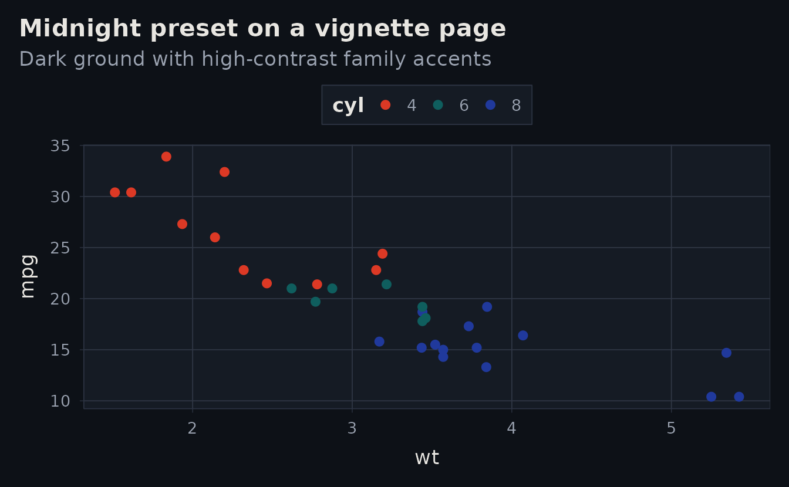
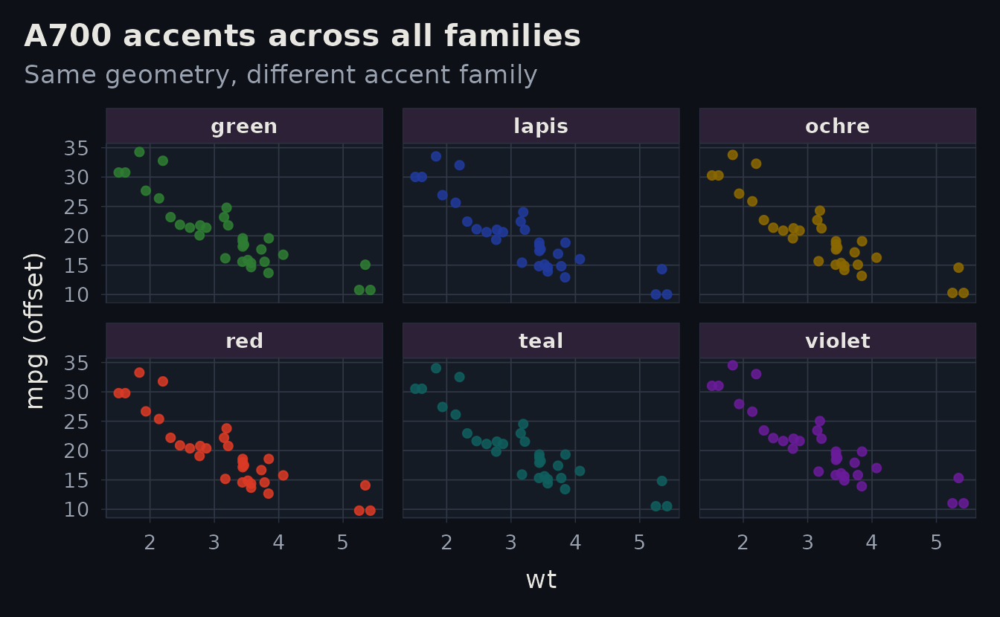

Why this vignette?
This page is a dedicated showcase for combinations that intentionally depart from the default light red look:
- dark ground (
preset: midnight) - alternate accent families (
lapis,ochre,teal,green,violet)
Midnight page, production-style plot
ggplot(mtcars, aes(wt, mpg, colour = factor(cyl))) +
geom_point(size = 2.2) +
albersdown::scale_color_albers_distinct() +
labs(
title = "Midnight preset on a vignette page",
subtitle = "Dark ground with high-contrast family accents",
colour = "cyl"
)
Accent family comparison
families <- c("red", "lapis", "ochre", "teal", "green", "violet")
accent_a700 <- vapply(families, function(f) albersdown::albers_palette(f)[["A700"]], character(1))
plot_df <- do.call(rbind, lapply(seq_along(families), function(i) {
d <- mtcars
d$family <- families[[i]]
d$mpg_offset <- d$mpg + (i - (length(families) + 1) / 2) * 0.25
d
}))
ggplot(plot_df, aes(wt, mpg_offset, colour = family)) +
geom_point(alpha = 0.85, size = 1.7) +
facet_wrap(~family, ncol = 3) +
scale_color_manual(values = accent_a700) +
labs(
title = "A700 accents across all families",
subtitle = "Same geometry, different accent family",
x = "wt",
y = "mpg (offset)"
) +
theme(legend.position = "none")
Copy-ready presets
recipes <- data.frame(
profile = c("dark-violet-minimal", "dark-lapis-minimal", "dark-teal-assertive"),
family = c("violet", "lapis", "teal"),
preset = c("midnight", "midnight", "midnight"),
style = c("minimal", "minimal", "assertive"),
stringsAsFactors = FALSE
)
knitr::kable(recipes, format = "html")| profile | family | preset | style |
|---|---|---|---|
| dark-violet-minimal | violet | midnight | minimal |
| dark-lapis-minimal | lapis | midnight | minimal |
| dark-teal-assertive | teal | midnight | assertive |
Next step
- Use
vignette("theme-lab")for interactive tuning. - Keep
vignette("getting-started")andvignette("design-notes")on the default light red presentation for baseline docs clarity.